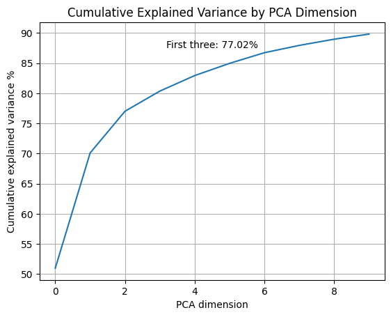

Dimensional reduction on carbon alpha distances
Alpha carbons (Cα) of a protein are the carbon atoms located in the central structure of each amino acid, bonded to an amino group, a carboxyl group, a hydrogen atom, and a side chain specific to the amino acid. They are important because they form the main backbone of the protein structure, determining the three-dimensional configuration of the protein through the peptide bond.
As in the other analysis to illustrate the output of our functions, we have chosen the analysis of the SH3 protein as an example. The graphs we present are related to the analysis of this protein, comparing three distinct ensembles downloaded directly from the Protein Ensemble Database (PED): PED00156, PED00157, and PED00158. These ensembles represent structural states of the N-terminal SH3 domain of the Drk protein (residues 1-59) in its unfolded form, generated with different approaches to initialize pools of random conformations.
PED00156: This ensemble consists of conformations generated randomly and optimized through an iterative process.
PED00157: This ensemble includes conformations generated using the ENSEMBLE method, which creates a variety of realistic conformations of an unfolded protein.
PED00158: This ensemble is a combination of conformations from the RANDOM and ENSEMBLE pools, offering greater conformational diversity.
analysis.extract_features(featurization='ca_dist')

The extract_features function from “ensamble_analysis.py” is designed to extract specific features from a dataset related to proteins.
The parameters we can set are:
“featurization”: Choose between “phi_psi”, “ca_dist”, “a_angle”, “tr_omega”, and “tr_phi”.
“normalize”: Whether to normalize the data. Only applicable to the “ca_dist” method. Default is False.
“min_sep”: Minimum separation distance for “ca_dist”, “tr_omega”, and “tr_phi” methods. Default is 2.
“max_sep”: Maximum separation distance for “ca_dist”, “tr_omega”, and “tr_phi” methods. Default is None.
After selecting the feature to extract, we can apply various dimensionality reduction methods using the reduce_features function. The parameters that can be set for this function are numerous and vary depending on the chosen reduction method.
PARAMETERS:
“method”: Choose between “pca”, “tsne”, “dimenfix”, “mds”, “kpca” and “umap”.
“fit_on”: If method is “pca” or “kpca”, specifies on which ensembles the models should be fit. The model will then be used to transform all ensembles.
ADDITIONAL PARAMETERS:
PCA:
“num_dim”:Number of components to keep. Default is 10.
t-SNE:
“perplexity_vals”: List of perplexity values. Default is range(2, 10, 2).
“metric”: Metric to use. Default is “euclidean”.
“circular”: Whether to use circular metrics. Default is False.
“n_components”: Number of dimensions of the embedded space. Default is 2.
“learning_rate”: Learning rate. Default is 100.0.
“range_n_clusters”: Range of cluster values. Default is range(2, 10, 1).
Dimenfix:
“range_n_clusters”: Range of cluster values. Default is range(1, 10, 1).
mds:
“num_dim”: Number of dimensions. Default is 2.
kpca:
“circular”: Whether to use circular metrics. Default is False.
“num_dim”: Number of components to keep. Default is 10.
“gamma”: Kernel coefficient. Default is None.
t-SNE
This technique converts similarities between data points into joint probabilities and seeks to minimize the Kullback-Leibler divergence between the joint probabilities of the low-dimensional embedding and the high-dimensional data.
Starting from the original scatterplot, the data points are initially projected into the low-dimensional space randomly and then gradually moved to form distinct clusters. At each step, a point is attracted towards nearby points in the scatterplot and pushed away from distant points. To achieve this, the ‘similarity’ between all points in the original scatterplot must first be determined: - The distance between two points is measured. - A normal curve centered on the point of interest is drawn, and a line is drawn from the second point to the curve (the length of this line is called ‘UNSCALED SIMILARITY’). - The unscaled similarities are then scaled so that they add up to 1.
From the original scatterplot, similarity scores are calculated for each point. Due to the width of the distribution being based on the density of the surrounding data points, the similarity score of two nodes cannot be the same. Therefore, t-SNE averages the two similarity scores from both directions and ends up with a matrix of similarity scores. Now, the data is randomly projected onto the number line, and similarity scores for the points on the number line are calculated similarly, measuring the distance and drawing a line from the point to a curve. Using the t-distribution, unscaled similarity scores for all points are then calculated and scaled as before. t-SNE moves the points incrementally, choosing a direction at each step that makes the matrix from the line more similar to the matrix obtained from the scatterplot.
analysis.reduce_features(method='tsne', perplexity_vals = [1,10,15,20], circular=True, range_n_clusters=range(2,10,1))
{kind=link}
visualization.dimensionality_reduction_scatter(color_by="end_to_end", save=False, kde_by_ensemble=True)
“color_by (str, optional)”: Determines the feature used to color points in the scatter plot. Options include “rg”, “prolateness”, “asphericity”, “sasa”, and “end_to_end”. The default is “rg”.
“save (bool, optional)”: If set to True, the plot will be saved in the data directory. The default value is False.
“ax (Union[None, List[plt.Axes]], optional)”: Allows you to provide a list of existing Axes objects to plot on. If set to None, new Axes objects will be created. The default value is None.
“kde_by_ensemble (bool, optional)”: If set to True, generates a KDE plot for each ensemble separately. If False, a single KDE plot is generated for the concatenated ensembles. The default value is False.

As it is shown it’s possible to set different paramenters:
perplexity_vals
list[float], optional-List of perplexity values [Default is range(2, 10, 2)]
Perplexity is related to the number of nearest neighbors used in the calculation of joint probabilities in other manifold learning algorithms. By changing the perplexity value, you can observe how the cluster structure changes in the visualization, with a direct impact on cluster separation and compactness.
In general, higher perplexity values consider more neighbors in the calculation of joint probabilities, which can lead to larger and more spread-out clusters in the embedding, providing a more global view of the data. This means that more distant data points can be grouped as if they belong to the same cluster.
On the other hand, lower perplexity values tend to create smaller and denser clusters, focusing on more local and detailed structures in the data. However, a too low value might overly emphasize local structures, while a too high value could provide a too global view, compromising the clarity in cluster separation.
For example, even when setting perplexity_vals to [1, 200, 5] and obtaining an optimal perplexity of 200 with the optimal number of clusters still being 3, the visualization appears more or less similar with different values of optimal perplexity.
analysis.reduce_features(method='tsne', perplexity_vals = [50, 170, 200], circular=True, range_n_clusters=range(2,10,1))
{kind=link}
visualization.dimensionality_reduction_scatter(color_by="end_to_end", save=False, kde_by_ensemble=True)
metric
str, optional-Metric to use. Default is “euclidean”.
This parameter specifies the distance measure to be used for calculating the similarities between points in the original dataset. The choice of metric can influence the result of the embedding as it determines how the distances between points are evaluated.
circular
bool, optional-Whether to use circular metrics. Default is False.
This parameter, if present, could indicate whether distance calculation should consider a circular or cyclic structure. For example, if working with data that have a periodic nature (such as angles ranging from 0 to 360 degrees), using a circular metric can be useful for accurately capturing the relationships between points, but this is not the case since we are working with distances.
n_components
int, optional-Number of dimensions of the embedded space. Default is 2.
This parameter specifies the number of dimensions in which one wants to reduce the data.
learning_rate
float, optional-Learning rate. Default is 100.0.
The learning rate, typically between 10.0 and 1000.0, controls how quickly an embedding is modified in each iteration. By adjusting it, one can regulate the convergence speed and the quality of the final embedding. A higher learning rate accelerates optimization and may lead to overly rapid adaptations that overlook certain data structures, making the visualization less stable. Conversely, a too low value risks slowing down the algorithm’s convergence.
range_n_clusters
list[int], optional-Range of cluster values. Default is range(2, 10, 1).
This parameter refers to the range of possible numbers of clusters one wishes to consider in the analysis.
PCA (Principal Component Analysis)
PCA is a dimensionality reduction technique based on the decomposition of the eigenvectors of the covariance matrix of high-dimensional data, aiming to identify a set of components that capture the maximum variance present in the data.
To achieve this, PCA projects the original data onto a new coordinate system defined by these principal components. The first principal component corresponds to the direction with the highest variance in the data, the second principal component to the direction with the second-highest variance, and so forth.
num_dim
int, optional-Number of components to keep. [Default is 10]
As the sole parameter, “num_dim” is optional and indicates the number of components to retain in the transformed dataset. A too high value of the “num_dim” parameter could result in retaining too many principal components, leading to a less significant reduction in dimensionality and potentially preserving noise or irrelevant information. Conversely, a too low value might excessively reduce the dimensionality of the data, causing the loss of important information.
analysis.reduce_features(method='pca')

visualization.pca_cumulative_explained_variance()
“save (bool, optional)”: If set to True, the plot will be saved as an image file in the data directory. The default value is False.
“ax (Union[None, plt.Axes], optional)”: This parameter allows you to provide an existing matplotlib Axes object to plot on. If set to None, a new Axes object will be created.
visualization.pca_rg_correlation()
visualization.pca_2d_landscapes()
“save (bool, optional)”: If set to True, the plot will be saved as an image file in the data directory. The default value is False.
“ax (Union[None, plt.Axes], optional)”: This parameter allows you to provide an existing matplotlib Axes object to plot on. If set to None, a new Axes object will be created.

visualization.pca_1d_histograms()
“save (bool, optional)”: If set to True, the plot will be saved as an image file in the data directory. The default value is False.
“ax (Union[None, plt.Axes], optional)”: This parameter allows you to provide an existing matplotlib Axes object to plot on. If set to None, a new Axes object will be created.

DimenFix
DimenFix allows for the analysis of high-dimensional data by highlighting original labels, radius of gyration (Rg) labels, and clustering labels, to facilitate the understanding of the structures and relationships present in the dataset.
To achieve this, DimenFix graphically represents the transformed data using random colors to distinguish between different original labels. Subsequently, it utilizes Rg values as colors to represent the radius of gyration for each data point. Finally, it applies the K-means method to group the data, visualizing the clusters.
range_n_clusters
list[int], optional-Range of cluster values. [Default is range(1, 10, 1)]
The parameter “range_n_clusters” determines the range of cluster values to consider during the analysis. A too wide range might result in an excessive subdivision of the data into clusters, making the interpretation of the results difficult and potentially introducing noise into the analysis. On the other hand, a too narrow range might not capture all the subgroups or significant structures present in the data, limiting the depth of the analysis.
featurization_params = {'featurization': "ca_dist"}
reduce_dim_params = {'method': "dimenfix", 'range_n_clusters':[2, 3, 4, 5, 6]}
analysis.execute_pipeline(featurization_params=featurization_params , reduce_dim_params=reduce_dim_params)

visualization.dimensionality_reduction_scatter(save=True, color_by='asphericity', kde_by_ensemble=True)
“color_by (str, optional)”: Determines the feature used to color points in the scatter plot. Options include “rg”, “prolateness”, “asphericity”, “sasa”, and “end_to_end”. The default is “rg”.
“save (bool, optional)”: If set to True, the plot will be saved in the data directory. The default value is False.
“ax (Union[None, List[plt.Axes]], optional)”: Allows you to provide a list of existing Axes objects to plot on. If set to None, new Axes objects will be created. The default value is None.
“kde_by_ensemble (bool, optional)”: If set to True, generates a KDE plot for each ensemble separately. If False, a single KDE plot is generated for the concatenated ensembles. The default value is False.

UMAP (Uniform Manifold Approximation and Projection)
UMAP (Uniform Manifold Approximation and Projection) is a non-linear dimensionality reduction algorithm that aims to maintain the topological structure of the original data. The goal of UMAP is to create a low-dimensional representation that preserves the clusters and relationships present in the high-dimensional data.
To achieve this, UMAP calculates similarity scores to identify clustered points and seeks to maintain these clusters in the low-dimensional representation. The similarity score curve is scaled so that the sum of the scores equals the base-2 logarithm of the n_neighbors parameter, ensuring that each point is similar to at least one other point. UMAP moves the low-dimensional points step by step until the clusters are separated similarly to what is observed in the high-dimensional data.
To use UMAP, you need the libraries numpy for array manipulation, matplotlib and seaborn for visualization, and umap for dimensionality reduction. These libraries allow you to reduce the dimensionality of the data while preserving its essential topological structure.
analysis.reduce_features(method='umap', n_neighbors=5, metric='euclidean')
{kind=link}
visualization.dimensionality_reduction_scatter(color_by="prolateness", save=True)
UMAP has several hyperparameters that can significantly impact the resulting embedding:
n_neighbors
int, number of nearest neighbors.[Default is 15].
This parameter controls how UMAP balances the local and global structure in the data. It does this by limiting the size of the local neighborhood UMAP will consider when learning the structure of the data manifold. Lower values of n_neighbors will force UMAP to focus on very local structures (potentially at the expense of the overall view), while higher values will make UMAP consider larger neighborhoods around each point when estimating the data manifold structure, losing structural details to gain a broader view of the data.
analysis.reduce_features(method='umap', n_neighbors=200, metric='euclidean')

visualization.dimensionality_reduction_scatter(color_by="prolateness", save=True)
min_dist
float, optional-Minimum distance. [Default is 0.1].
This parameter provides the minimum distance that points can have in the low-dimensional representation. This means that lower values of min_dist will lead to tighter clustering, potentially resulting in a loss of overall data vision. In this case, even small variations in the data can become overly emphasized.
Conversely, higher values of min_dist will prevent UMAP from identifying distinct clusters, instead focusing on the overall structure. This can lead to a loss of important details in the local relationships between points, resulting in a representation that, while preserving the general topology, lacks precision in detail.
n_component
int, optional-Number of components.[Default is 2]
This parameter determines the dimensionality of the reduced space in which we will embed the data.
metric
str, optional-Metric to use.[Default is “euclidean”].
The “metric” parameter in UMAP controls how distances are calculated in the input data space, and naturally, the choice of metric depends on the specific characteristics of the data and the analytical objectives.
[For a comprehensive documentation of the possible metrics, you can consult the following link: https://umap-learn.readthedocs.io/en/latest/parameters.html#metric]
Euclidean: This metric is based on the formula of the square root of the sum of the squares of the differences between the coordinates of the points. It is commonly used when working with data that can be represented in a Euclidean space.
Canberra: This metric calculates the distance as the sum of the absolute differences between the coordinates of the points divided by the sum of the coordinates of the points themselves. It is suitable for data with very different value ranges and is effective in capturing covariance between variables. This makes it useful for analyzing multivariate data.
Mahalanobis: A generalization of the Euclidean distance, this metric takes into account the covariance between variables. It is particularly useful when working with multivariate data and when it is desired to consider the correlation between variables.
Cosine: This metric measures the angle between two vectors, rather than their magnitude. It is suitable for situations where the direction of the vectors is more important than their length.
analysis.reduce_features(method='umap', n_neighbors=200, metric='canberra')
{kind=link}
visualization.dimensionality_reduction_scatter(color_by="prolateness", save=True)
Differences between t-SNE and UMAP
t-SNE always starts with a random initialization of the low-dimensional graph and everytime we run t-SNE on the same dataset, we start with a different low-dimensional graph of the data.UMAP, instead, uses something called SPECTRAL EMBEDDING to initialize the low-dimensional graph and what that means, is that everytime we use UMAP on a specific dataset, we always start with the exact same low-dimensional graph.
t-SNE moves every single point a little bit each iteration, while UMAP can move just one point or a small subset of points, each time and this help it scales well with super big dataset.